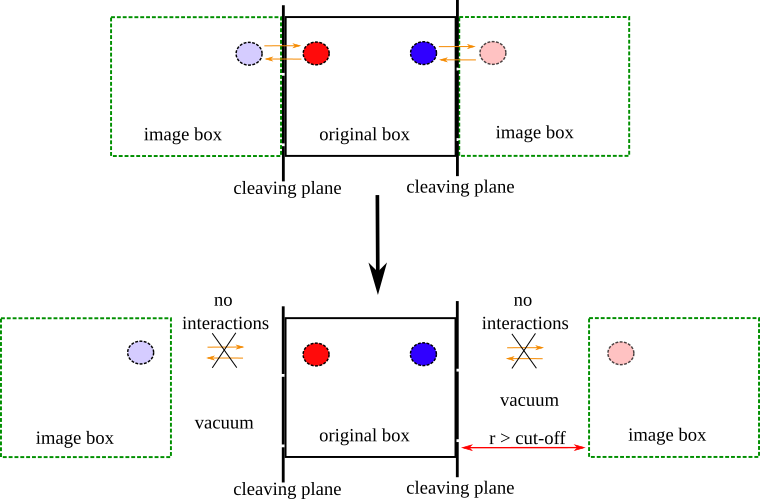

pair_style lj/BGcleavpbc¶
Syntax¶
pair_style lj/BGcleavpbc cutoff1 cutoff2 dir
cutoff1= global internal cut-offcutoff2= global external cut-offdir= direction normal to the cleaving plane
pair_coeff accepts the same arguments as the pair_style except for direction
pair_coeff a b cutoff1 cutoff2
where
a = atom of type a [mandatory]
b = atom of type b [mandatory]
cutoff1 = global internal cut-off
cutoff2 = global external cut-off
the arguments in the pair_coeff are all optional except for the atom types. Note that the order is important the internal cut-off must be declared before the external one
Examples¶
pair_style lj/BGcleavs3 2.3 2.5
pair_coeff 1 1
pair_coeff 1 2
Description¶
This pair style implements the Broughton and Gilmer modification to Lennard-Jones potential Broughton and Gilmer1 (see pair lj/BG) to be used in the step3 of the cleaving algorithm. The switching off of the interaction in this case is not obtained by varying a \(\lambda\) parameter in the interval \([0,1]\) but by moving away the images of the box from the original one (in a specified direction) until the box itself is not interacting with the images anymore, see next figure.

This pair style returns also an array with all the calculated interactions which are needed to calculate the work in the step3. This array can be accessed using the new compute [compute paircleav]}{compute_pcleav.md}.
The potential implemented in this pair style is the same described in pair lj/BG. The only difference is the fact that this pair style keeps track of the interactions across the periodic images which are the ones needed to calculate the work in this step. The movement of the periodic images can be obtained using the LAMMPS command change_box. An example of the application of this pair_style is reported in example SV-wells.
We refer to Di Pasquale and Davidchack2 for the details of the calculation of the work for this pair style.
- 1
J. Q. Broughton and G. H. Gilmer. Molecular dynamics investigation of the crystal–fluid interface. i. bulk properties. Journal of Chemical Physics, 79(10):5095–5104, 1983.
- 2
N. Di Pasquale and R. L. Davidchack. Shuttleworth equation: a molecular simulations perspective. The Journal of Chemical Physics, 2020.